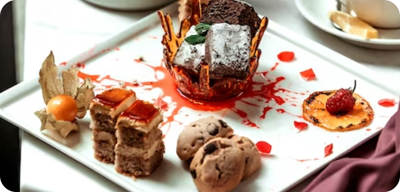

Our Blog
Embark on a journey into the refined world of high tea parties with this comprehensive guide, offering valuable insights and practical tips for hosting an unforgettable and sophisticated gathering. From exquisite tea selection to delectable finger sandwiches, discover the secrets to creating an elegant and effortless high tea experience for your guests.
1. The Art of Tea Selection: Delve into the art of tea selection, exploring the diverse range of tea varieties available, from classic English Breakfast and Earl Grey to exotic herbal blends and fragrant green teas. Learn how to curate a selection of teas that cater to different tastes and preferences, ensuring a delightful tea-drinking experience for your guests.
2. Fine China and Table Settings: Explore the importance of fine china and table settings in setting the tone for an elegant high tea party. Discover tips for selecting the perfect tea set, including delicate teacups, saucers, and elegant teapots, and learn how to arrange them artistically to create a visually stunning tablescape that exudes sophistication and charm.
3. Delectable Finger Sandwiches: Indulge in the art of crafting delectable finger sandwiches, a quintessential element of any high tea party. Explore creative sandwich fillings and flavor combinations, from classic cucumber and cream cheese to savory smoked salmon and dill, and learn how to assemble and present them elegantly on tiered serving trays.
4. Scones, Jam, and Clotted Cream: Delight in the traditional pairing of freshly baked scones, fruity jams, and indulgent clotted cream, a hallmark of the high tea experience. Discover the secrets to baking light and fluffy scones from scratch, and learn how to serve them alongside homemade jams and rich clotted cream for an authentic and irresistible treat.
5. Sweet Treats and Pastries: Indulge your sweet tooth with an array of exquisite sweet treats and pastries, including delicate petit fours, dainty macarons, and buttery shortbread cookies. Explore creative dessert ideas and learn how to present them elegantly on cake stands and dessert platters, adding a touch of decadence to your high tea spread
6. Refreshing Beverages: Quench your guests' thirst with a selection of refreshing beverages to complement the tea experience. Explore options such as sparkling lemonades, fruit-infused iced teas, and refreshing mocktails, and learn how to serve them in elegant glassware with garnishes for a sophisticated touch.
7. Floral Decor and Tablescapes: Elevate the ambiance of your high tea party with exquisite floral decor and tablescapes. Discover tips for incorporating fresh flowers, floral centerpieces, and botanical accents into your table settings, creating a charming and picturesque backdrop for your elegant affair.
8. Entertainment and Activities: Add an element of entertainment and engagement to your high tea party with curated activities and entertainment options. Explore ideas such as live music performances, interactive tea tastings, or floral arranging workshops, ensuring that your guests are entertained and enthralled throughout the event.
9. Personalized Touches and Favors: Add personalized touches and thoughtful favors to your high tea party to make it truly memorable for your guests. Explore ideas such as personalized tea sachets, monogrammed napkins, or custom-designed menu cards, adding a touch of sophistication and exclusivity to your event.
10. Gracious Host Etiquette: Embrace the art of gracious host etiquette and hospitality, ensuring that your guests feel welcomed, valued, and pampered throughout the high tea party. Learn how to greet and interact with guests, anticipate their needs, and create a warm and inviting atmosphere that fosters meaningful connections and cherished memories.